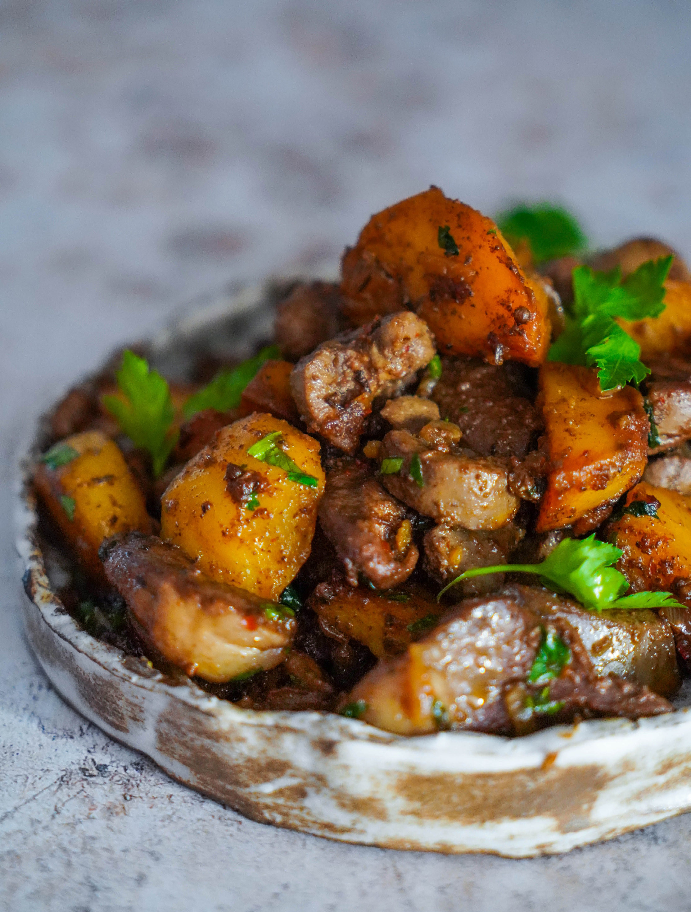

Традиционное жаркое из субпродуктов или мяса, чаще всего баранины, с луком и картофелем у многих народов Средней Азии — киргизов, казахов, узбеков и их соседей. Куурдак готовят также и из смеси мяса и субпродуктов. Интересно, что русское слово «кавардак» произошло именно от названия этого блюда — в самом простом варианте подачи оно выглядит довольно неряшливо, отсюда и аналогия с «беспорядком». В нашем конспекте вы найдете много разнообразных блюд из мяса, поэтому мы решили предложить вам рецепт куурдака из субпродуктов. Во-первых, они очень полезны, во-вторых, невероятно вкусны, если правильно их приготовить. В-третьих, не будем забывать об экологичности и гуманном подходе — если уж мы едим животных, то следует делать это по принципу «от носа до хвоста», с минимумом отходов. И, наконец, в-четвертых, многие совершенно напрасно боятся использовать субпродукты в готовке, считая, что они отнимают много сил и времени, и обращаться с ними сложно. Вот увидите — это не так. Если боитесь, что печень или почки придадут блюду неприятный запах, вымочите их предварительно в молоке, но имейте в виду, что молочные продукты препятствуют усвоению железа, а одно из наиболее ценных качеств субпродуктов в том, что это богатейший источник железа. В рецепте предлагается приготовить блюдо из бараньих субпродуктов: почек, печени и сердца. Если у вас есть бараньи легкие, можете смело добавлять их в тот же набор. Решительно не хотите готовить субпродукты, предпочитая мясо? Ваше право — замените субпродукты соответствующим по весу количеством баранины, это могут быть ребрышки или мякоть ноги, или смесь того и другого. Далее, после обжаривания картофеля, приготовьте мясо аналогично субпродуктам — сначала обжарьте на сильном огне, затем огонь убавьте, добавьте лук и специи и потушите до мягкости, прежде чем возвращать в казан картошку. Разумеется, традиционно куурдак готовился на бараньем жире — курдючном или нутряном, но заменив его оливковым маслом, полностью или частично, вы ничего не потеряете во вкусе, зато сделаете блюдо легче усваивающимся и менее жирным. Помните, что наша с вами задача — не слепо следовать классическим рецептам, а переосмысливать их в духе современных принципов правильного питания. Впрочем, если захотите воспроизвести рецепт в традиционном варианте, просто исключите оливковое масло и используйте 80–100 г курдючного или нутряного жира. Картошку для куурдака можно пожарить и подать отдельно или выложить поверх рагу из субпродуктов, тогда она останется красивой и хрустящей, а можно слегка потушить вместе с субпродуктами, чтобы она впитала часть соков. Это вкусно, но не так красиво, и хрустящей корочки тоже не будет. Выбор за вами.